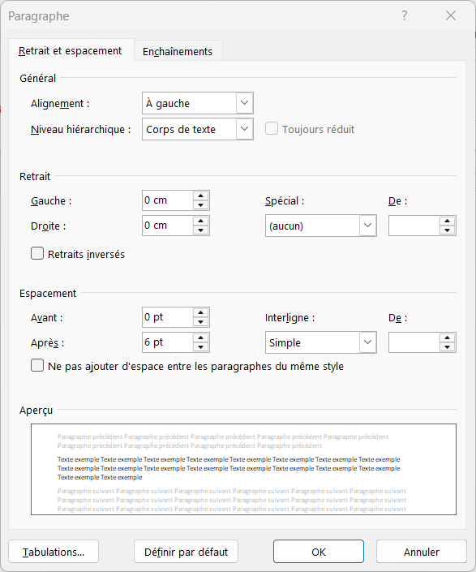

1. Retraits
Décaler un paragraphe par rapport aux marges (gauche, droite, première ligne, négatif).
Ouvrir la page « Retraits »Comprendre retraits, espacements et interlignes dans Microsoft Word
Ce mini-site présente séparément les trois grands réglages de la boîte de dialogue Paragraphe de Word : Retraits, Espacement et Interligne.
Pour chaque thème, vous trouverez :
Décaler un paragraphe par rapport aux marges (gauche, droite, première ligne, négatif).
Ouvrir la page « Retraits »Ajouter de l’espace au-dessus ou au-dessous d’un paragraphe (Avant / Après).
Ouvrir la page « Espacements »Régler l’espace entre les lignes à l’intérieur d’un même paragraphe.
Ouvrir la page « Interlignes »Aperçu de la boîte de dialogue utilisée sur toutes les pages :
